OTIUM — практика нарочитого досуга. В античном смысле otium — не побег от работы, а время, когда внимание возвращается к памяти, пейзажу и мысли — без прикладного дедлайна.
Мы выстраиваем маршруты для неспешного присутствия, а не для чек-листа достопримечательностей: важно быть в месте, а не «потреблять» виды.
OTIUM — не туроператор. Это приглашение пройтись, остановиться и оставить маршрут незавершённым, если свет на фасаде заслуживает ещё минуты.
Исторические и справочные гербы
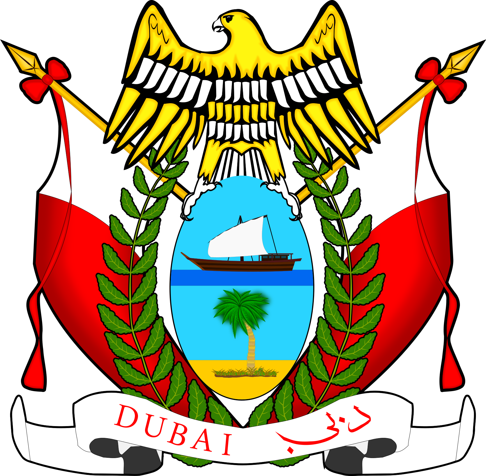
Путеводитель. Объектов в этом выпуске: 35.
Дубай — крупнейший город эмирата Дубай (ОАЭ), финансовый и туристический центр Персидского залива.
От рыбацкой и жемчужной деревни к мегаполису за несколько десятилетий XX–XXI веков: небоскрёбы, искусственные острова и логистические хабы. Дубай сочетает арабское культурное наследие с глобальной экономикой услуг.
Нефть дала старт инфраструктуре; экономическое диверсифицирование сделало Дубай узлом авиаперевозок и выставок. Город привлекает специалистов со всего мира, сочетая исламскую культуру с глобальным сервисом и инвестициями в недвижимость и туризм.
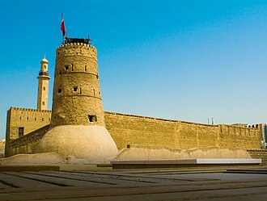
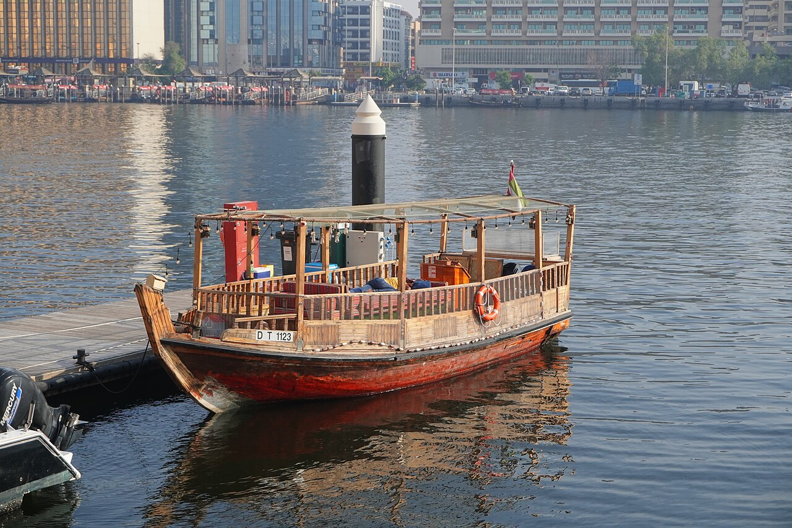
Деревянные дорожки, пристани для доу и кафе, связывающие Аль-Фахиди с отельными комплексами у русла реки. Ночное освещение подчеркивает силуэты ветряных башен. Абрасы до сих пор ходят в Дейру всего за один дирхам.
Проект по формированию среды, объединяющий историческую застройку и современные гостиничные кварталы. Пешеходная зона между музеем форта и потоком транспорта у ручья.
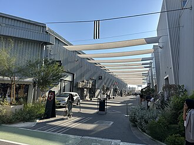
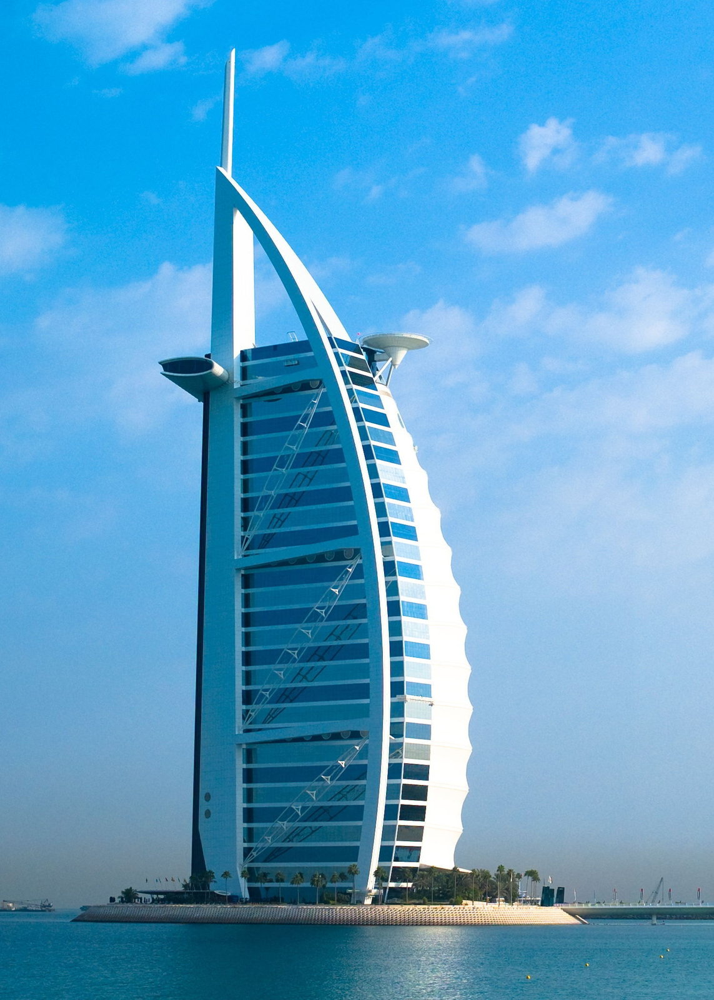
Роскошный отель на восстановленном холме, с видом вдоль пляжа Джумейра. Интерьерный атриум и рестораны требуют предварительного бронирования от гостей. Виды с общедоступных пляжей позволяют сделать классические силуэтные фотографии в «синий час». Показательные выступы с вертолетных площадок в рамках маркетинга сделали Королевство всемирно известным.
Метафора парусности Тома Райта стала первой мировой архитектурной иконой Дубая до того, как Бурдж-Халифа превзошел рекорды высоты. Прибрежный объект между старой торговлей ручьем и мегапроектами "Пальма".
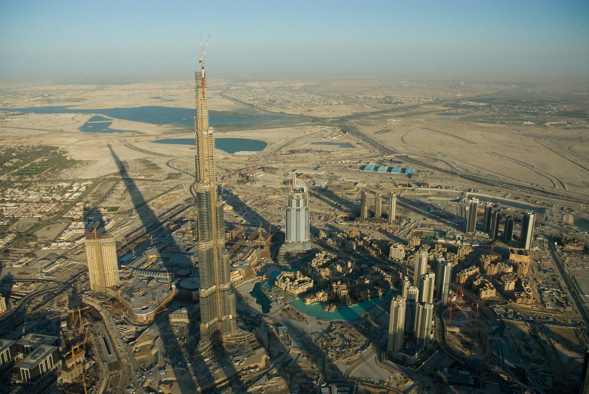
Самое высокое в мире здание после завершения строительства, с смотровыми палубами на верхних уровнях и фонтанными шоу у его основания. Ресторан At.mosphere занимал верхний этаж годами, прежде чем в нём сменились другие концепции. Билеты на вечерние сеансы часто раскупаются первыми.
Мегапроект под руководством Emaar, ранее известный как Burj Dubai, был переименован к открытию и является ориентиром высотного коридора Шейх Зайд Роуд. Вертикальный восклицательный знак маркетинга горизонтов Дубая.
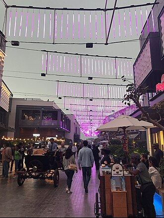
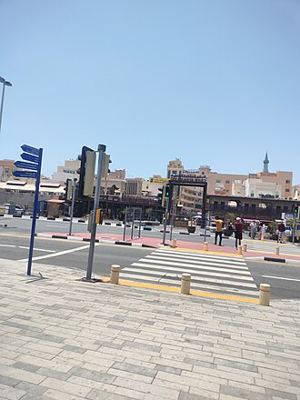
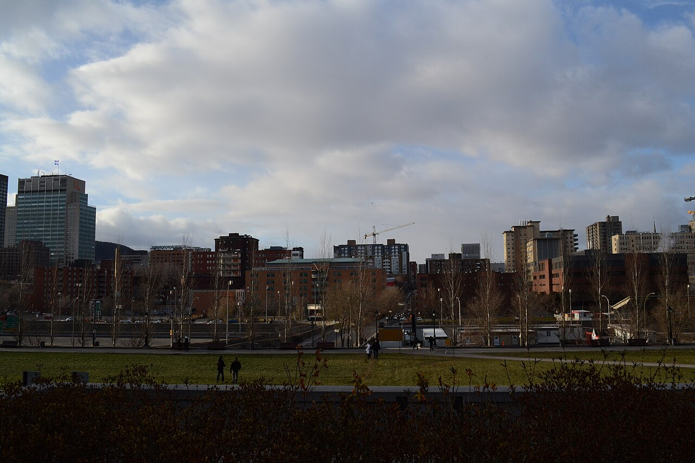
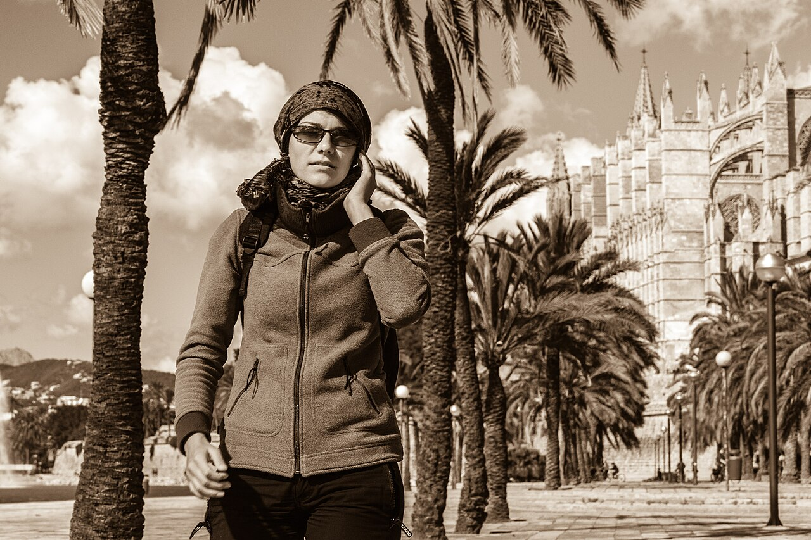
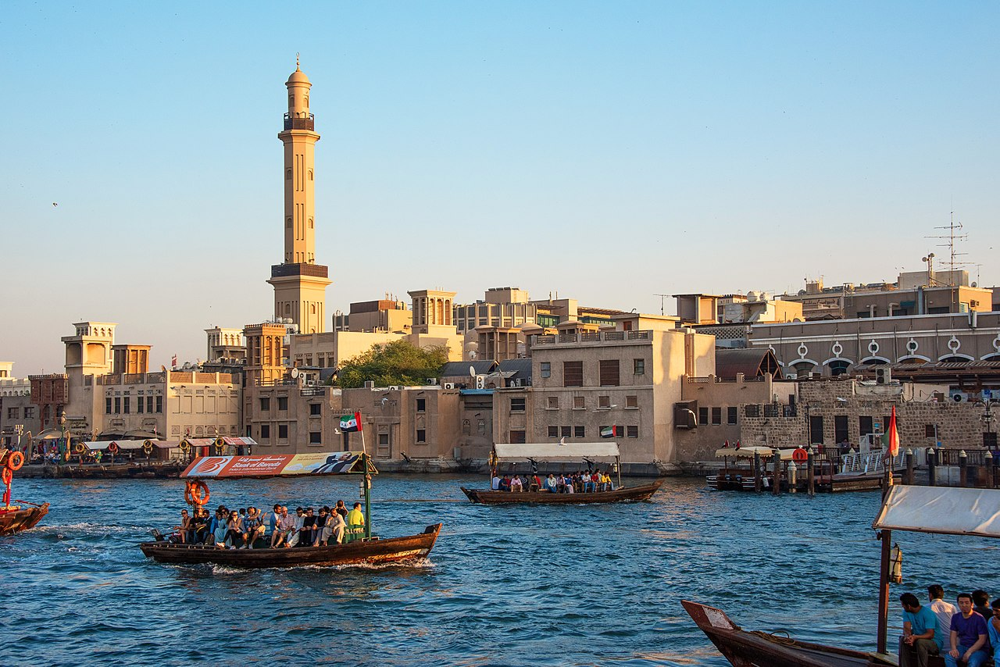
Соленый вход, где встречаются текстильный и золотой рынки Абрас. Абрас до сих пор перевозят пассажиров за сбор в дирхамы. Ароматы специй и лавки текстиля находятся в небольшой пешей доступности от причалов абра. Район парусных минаретов аль Фахиди находится на берегу Бур-Дубай.
Здесь причаливали жемчужные и торговые лодки до того, как нефтяные доходы сместили центр тяжести города в сторону моря. Масштаб человеческих размеров-противовес стеклянным каньонам Марины.
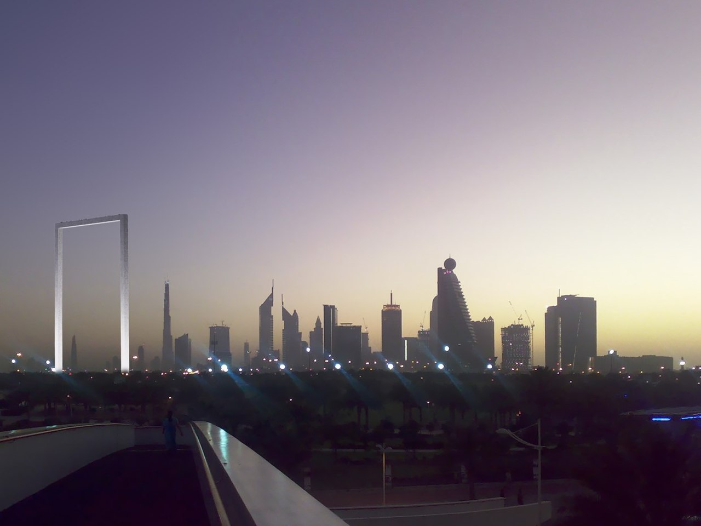
Наблюдательный мост, соединяющий старинные истории о ручьях с видами на горизонт шоссе Шейха Зайда. Панели со стеклянным полом отмечают переход между старыми и новыми залами. Метро Забиль Парк облегчает поиск такси в выходные.
Символ портала, удостоенный победы на конкурсе, спровоцировал дискуссию о том, что лучше: архитектурные уловки или повествовательный подход в формировании силуэта города. Фотографический кадр-элемент, воплощенный в архитектуру.
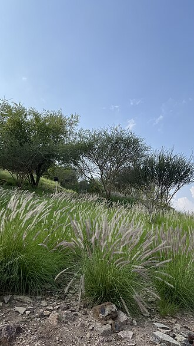
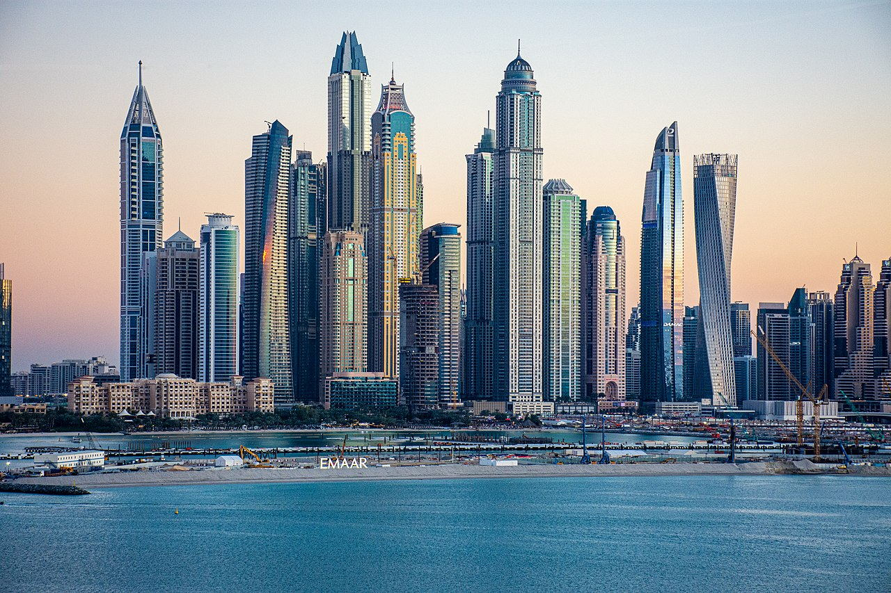
Искусственная марина, выстроенная вдоль башен, кафе и круизных ужинов на дхоу. Вечерний свет отражается в воде между пешеходными дорожками. Мрина Ворк популярна для пробежек после наступления темноты, когда снижается температура. Трамвайные линии соединяются с пляжем JBR, не перекрещивая оживлённые дороги.
Раскопанный канал и рекультивированные края создали новую шаблонную недвижимость на набережной к западу от старого города торгового ручья. Самое плотное скопление жилых супервысоких зданий в эмирате.
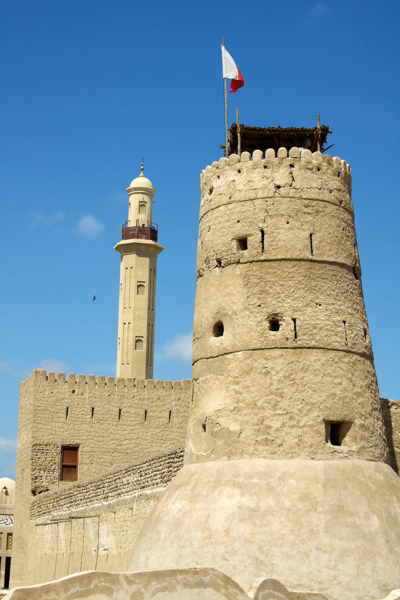
Выставки по жемчужному промыслу, жизни на рынке (суке) и археологии ручьев внутри самого старого сохранившегося здания города. Сочетайте это с ближайшими дворами дивана шейха. Вечерние прогулки на «абра» отправляются ниже крепостных стен.
Оборонительный центр Фасиль до того, как карты британского протектората переформатировали прибрежную безопасность. Истоки мегаполиса уходят корнями в торговлю, осуществлявшуюся по ручьям.
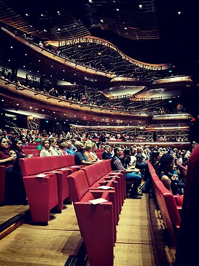
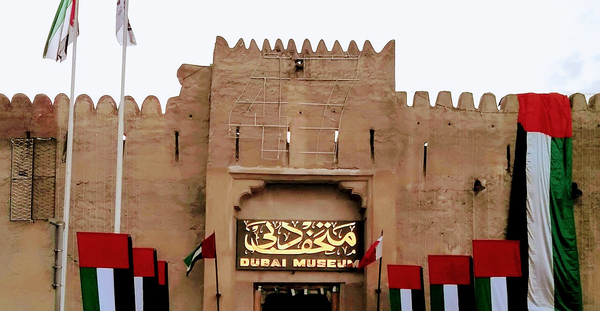
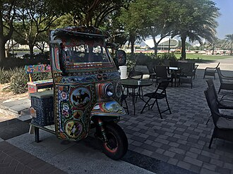
Музей Этихада — музей в Дубае.
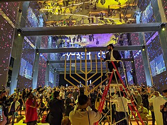
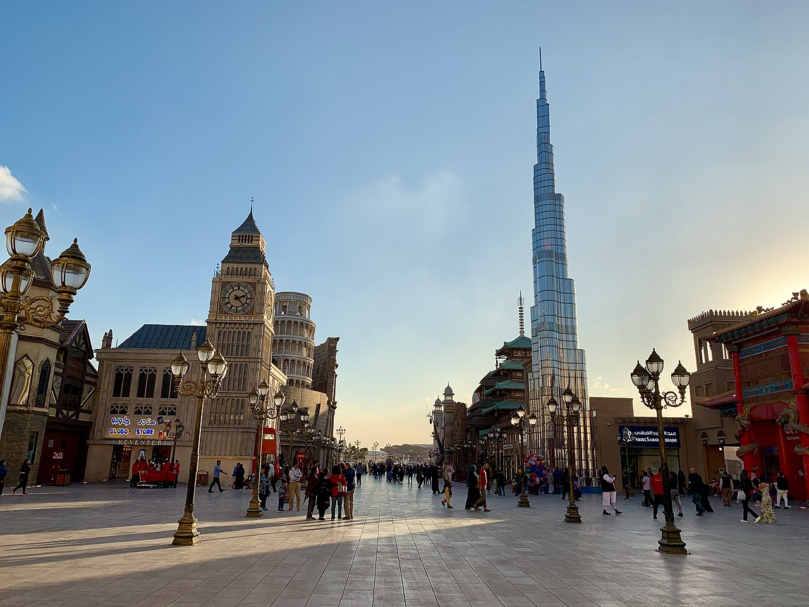
Зимняя ярмарка в павильонах, с уличной едой и карнавальными аттракционами к востоку от центра города. Открывается примерно с ноября по апрель; проверьте актуальные даты перед поездкой. Парковки обширны — запомните букву вашей зоны.
Начиналось как скромные ремесленные палатки; сегодня масштаб соответствует амбициям региональной выставки. Семейный вечер вне дома для экспатриантских сообществ.
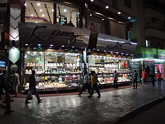
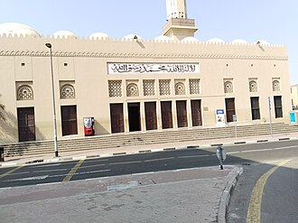
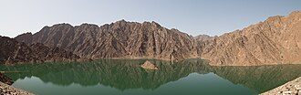
Хатта (араб. حتا, местное произношение [ˈħɑttɐ]) — внутренний эксклав эмирата Дубай, расположенный в Объединенных Арабских Эмиратах. Ранее это была оманская территория, и ее владение было передано Дубаю приблизительно в 1850 году. География Хатта расположена к юго-востоку от основной территории Дубая и находится примерно в 134 км (83 миль) к востоку от Дубая.
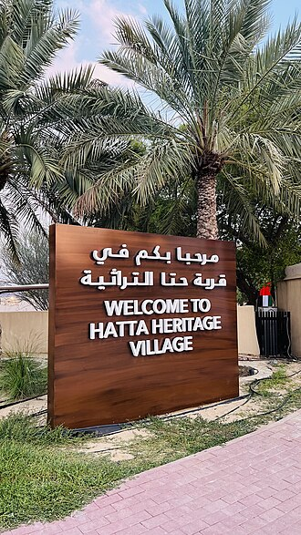
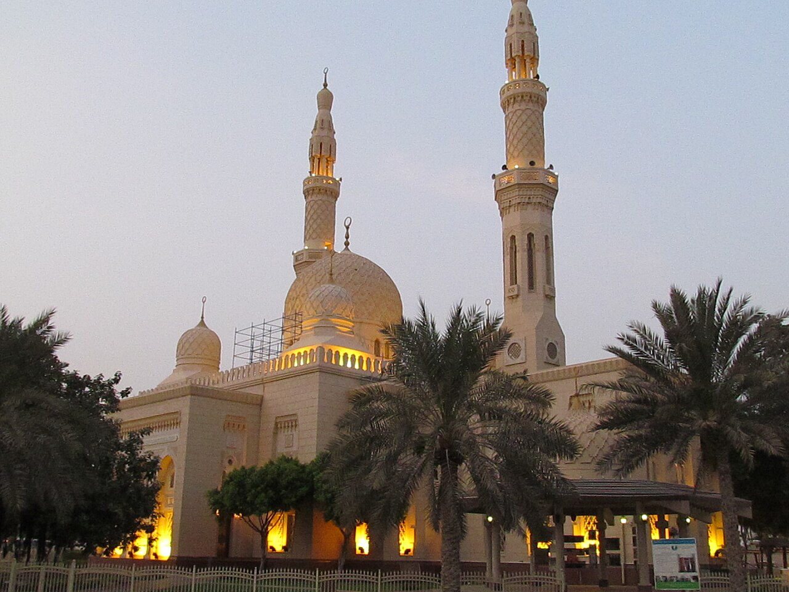
Мечеть-камень продвигается для экскурсионных посещений «Открытые двери», на которых рассказывается об эмиратской культуре и молитвенной практике для посетителей. Для организованных туров требуется скромная одежда. Подсветка после наступления темноты подчеркивает две минарета и центральный купол.
Построен в дар от шейха Рашида; его программа культурного обмена предшествует многим более новым музейным инициативам. Доступное введение в архитектуру мечетей, вдали от центральных небоскрёбов.
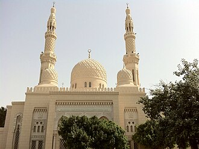
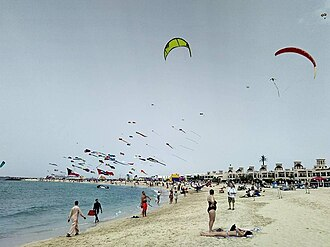
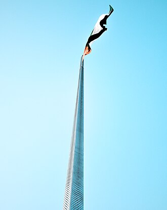
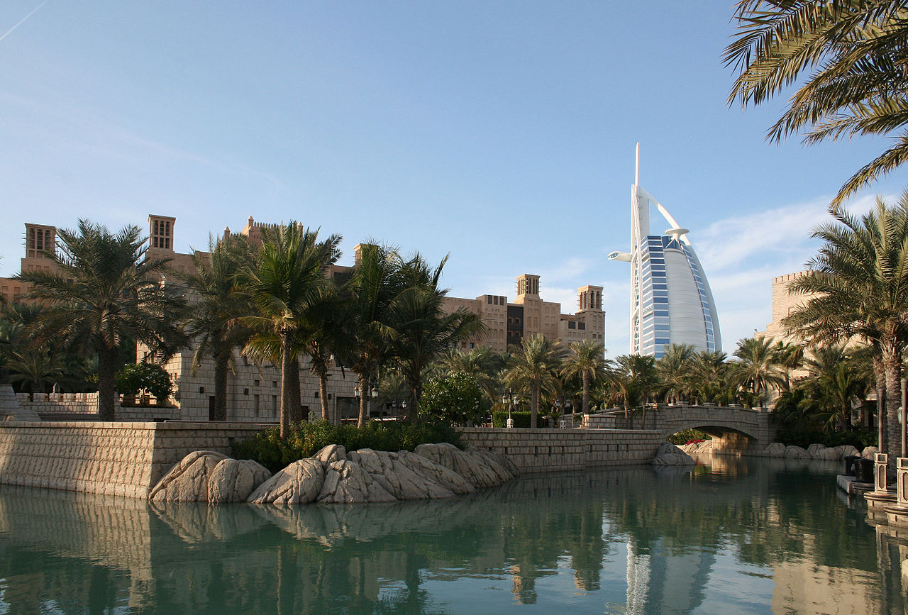
Набережный ватертакси к ресторанам в стиле фальшивого сук с видом на Бурдж-эль-Араб. Поездки на автобусе Абра дешевле, чем такси по курортам у пляжа. Театры предлагают разовые билеты на гастролирующие мюзиклы, которые не входят в комплект ключей от отеля.
Группа Джумейра объединила местные мотивы в масштабный гостиничный район. Контролированный фэнтези-образ «Старого Дубая» рядом с открым заливом.
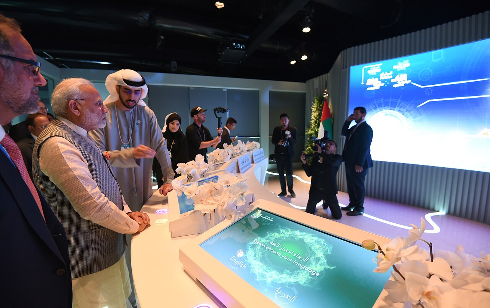
Иммерсивное пространство, посвященное будущему климата, здоровья и космоса, без традиционных витрин. Билеты с фиксированным временем раскупают за недели до начала сезона. Связан пешеходной галереей с кондиционером.
Правительственный брифинг запросил значок, который можно прочитать на скорости на шоссе. Постэкспо футуристический брендинг Дубая в материальной форме.
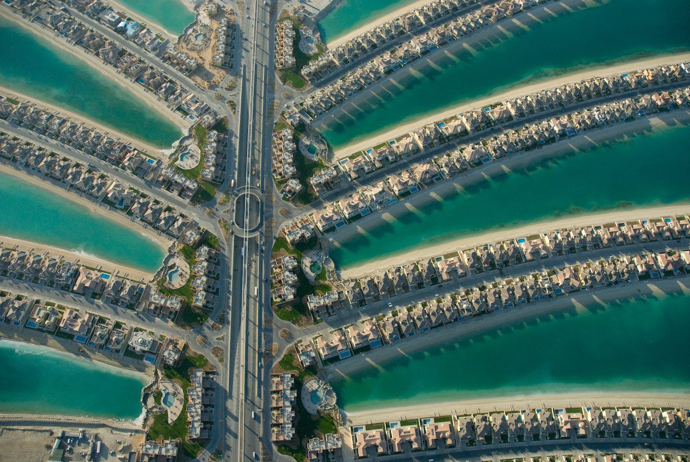
Монорельс и магистральная дорога, обрамленные жилыми башнями, ведут к курортному комплексу Atlantis в районе Полумесяца. The View at The Palm предлагает доски с перспективой в виде карты. Для посещения пляжных клубов требуется бронирование по пятницам после обеда.
Тростниковый полигон Нахили расширил пляжную недвижимость Дубая в сторону моря. Инженерное чудо, видимое с воздуха при приближении.
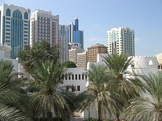
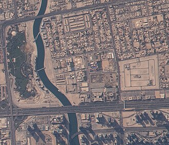
Сафа Парк — парк в Объединённых Арабских Эмиратах.
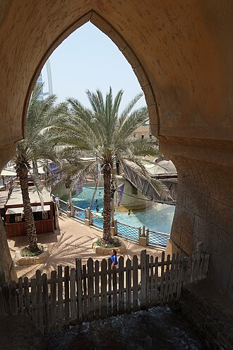
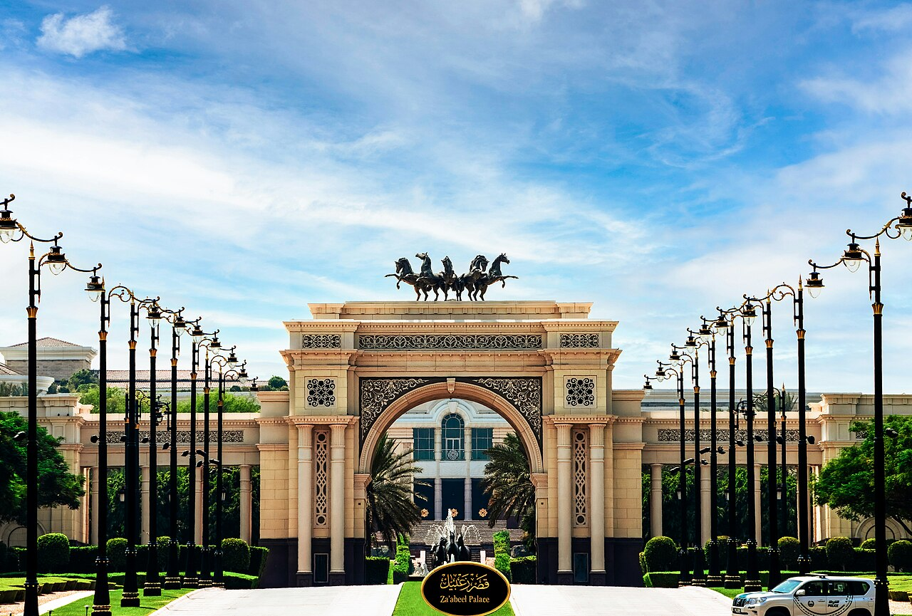